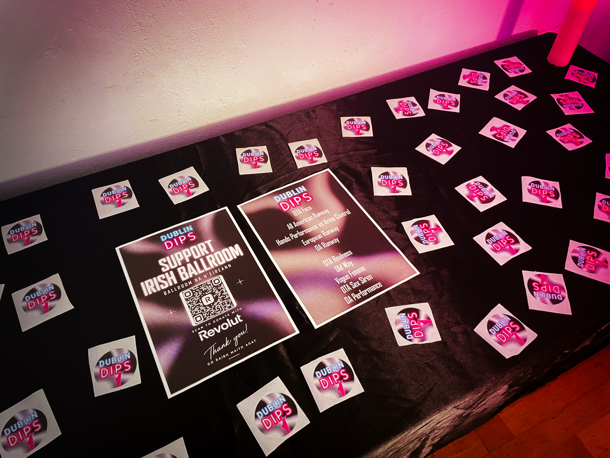
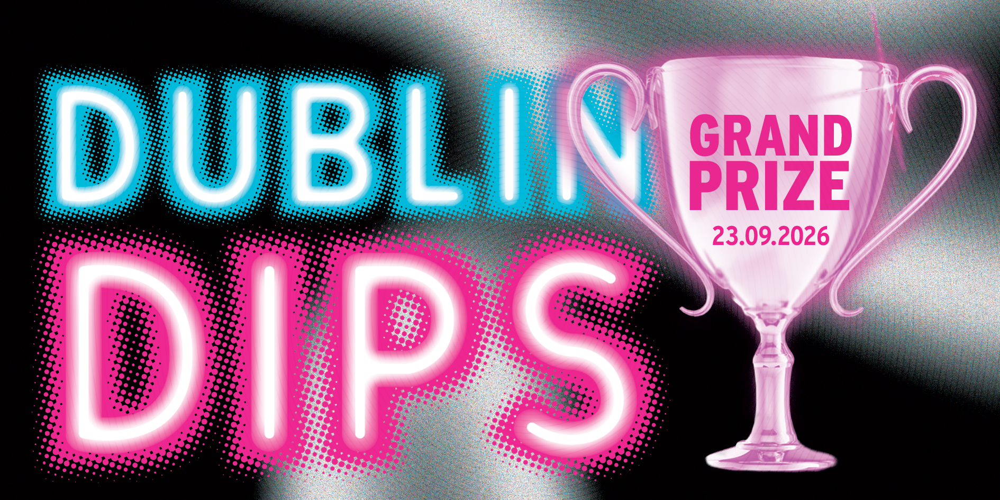
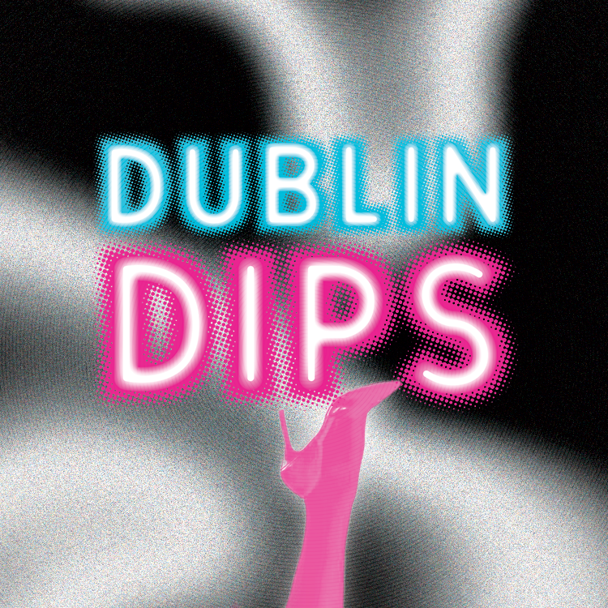
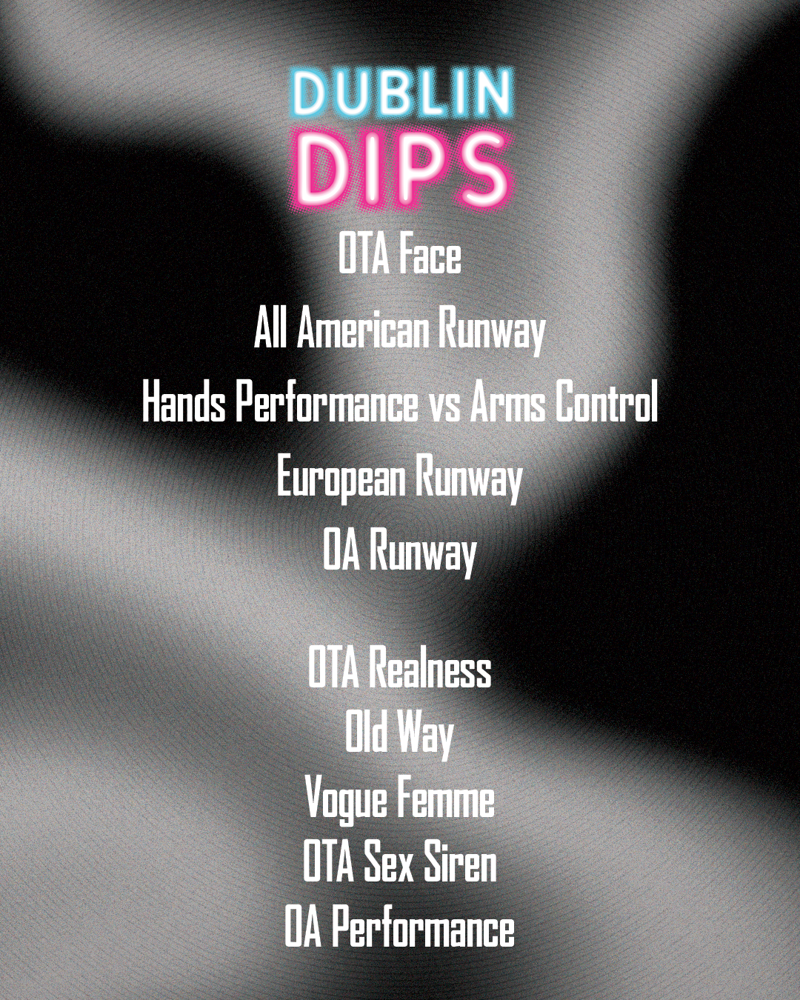
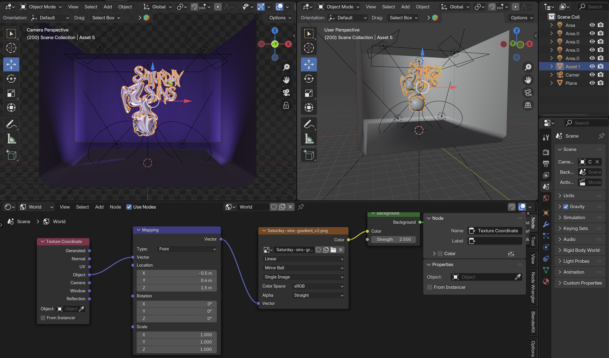

April 2026 - Ongoing
Role(s):
Starting in the 1970's in Harlem, New York, the Ballroom scene and subsequent movement offered a new form of language to challenge societal structures and reprensent the various intersections of race, gender, and sexuality. Spreading across the world, the Ballroom scene was created by and for Black and and Latinx trans people. As a "007" in the Irish Ballroom community, I've had the honor and pleasure of not only competing in the Ballroom scene, but creating print and promotional graphics for various organization and ballroom Houses across Europe.





